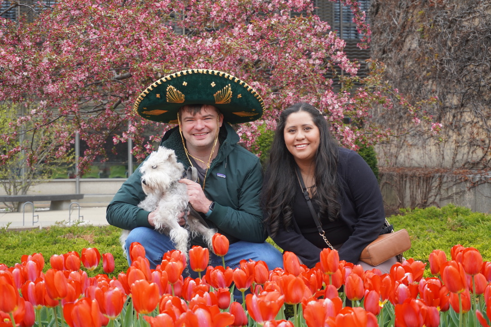
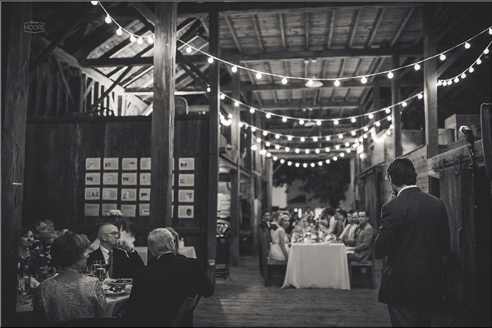

We are so happy to celebrate this special day with the people we love.
Estamos muy felices de celebrar este día con las personas que queremos.
Our sweet dog is named Hachi 🐶
Nuestro lindo perro se llama Hachi 🐶
We are so happy to celebrate this special day with the people we love.
Estamos muy felices de celebrar este día con las personas que queremos.
Sunday, May 31, 2026
Wright-Locke Farm
Winchester, Massachusetts
Formal
We will be celebrating at Wright-Locke Farm in Winchester, Massachusetts —
a beautiful modern indoor space surrounded by nature.
Celebraremos en Wright-Locke Farm en Winchester, Massachusetts —
un espacio interior moderno rodeado de naturaleza.

Wedding Officiant · Boston, MA
Our ceremony will be led by a warm and engaging officiant with a background in comedy. The ceremony will be personal, meaningful, and centered on celebrating our story and the people we love.
Forecast will be shown here and will update dynamically closer to the wedding date.
Your presence is truly the greatest gift to us.
For those who would like to give a gift, we have included a small registry for convenience.
Guests are also very welcome to bring a gift in person or choose something meaningful in their own way. Your kindness and thoughtfulness mean the world to us.
After the wedding, we will be returning to Wisconsin, where we continue our professional work at the University of Wisconsin–Madison. For that reason, the registry is simply one option that helps us travel back a little lighter.
Su presencia es realmente el mejor regalo para nosotros.
Para quienes deseen hacernos un regalo, hemos incluido una pequeña mesa de regalos como opción.
También son muy bienvenidos a llevar un regalo en persona o elegir algo significativo a su manera. Su cariño y detalle significan muchísimo para nosotros.
Después de la boda regresaremos a Wisconsin, donde continuamos con nuestra vida profesional en la Universidad de Wisconsin–Madison. Por esta razón, la mesa de regalos es simplemente una opción que nos ayuda a regresar un poco más ligeros.